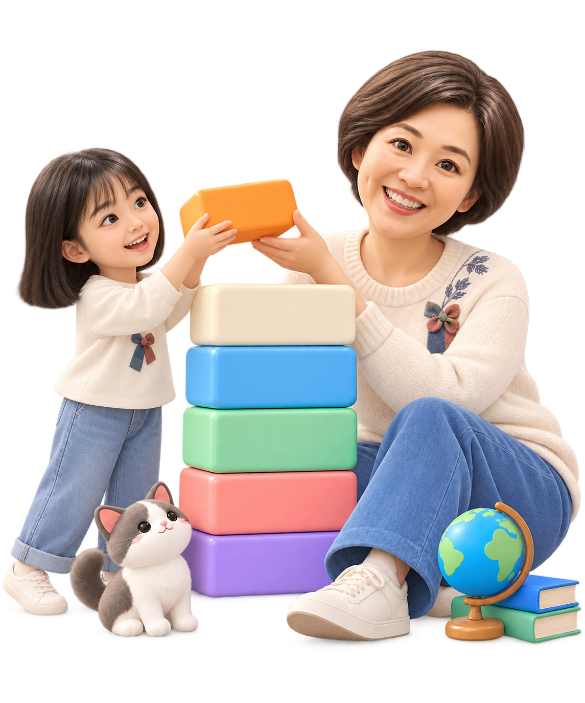

Learn Korean.
Meet people.
Make it yours.
Small, practical lessons. English guidance. Korean you can bring into a real conversation.
Prepare at your own pace, then practice with people who want to learn your language, too.

더 자신 있는한국어 화자자연스러운
한국어 표현진짜 한국어
소통탄탄한
한국어 로직유용한 한국어
청크 & 패턴매일 작은
연습
Meet. Practice. Connect.
See the current gathering and ask about Korean–English exchange.
Gathering information →Published updates
Browse the Korean starter collection while the bulletin updates.
Open Studio →Explore TalkTag
The latest published collections appear here automatically.
Open Studio →Preparation gives you words.
People give them a place.
TalkTag brings together people learning English and people learning Korean. Our goal is simple: help you move from recognizing a language to using it with confidence.
Snowballing Studio is where you prepare. Practice, build sentences, remember, and retell in your own words. Talk & Tag is where that preparation can become a conversation—with someone who has a learning goal of their own.
Both languages deserve equal time and respect. You are a fellow learner, not a free private tutor. Beginners are welcome; asking for clarification and helping each other are part of learning.
Ilgongje Study Cafe in Uijeongbu is our physical meeting point. Reciprocal exchange is the community direction; the currently announced English training program is a separate activity. Exchange dates will be published only when confirmed.
Everyday Korean. Something to say.
Six original starter themes. Polite everyday Korean, English meanings, and a small conversation challenge.